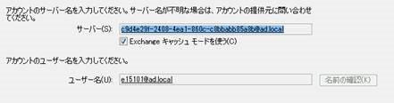
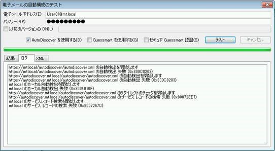
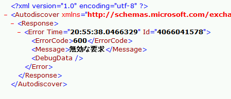
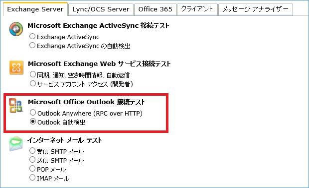
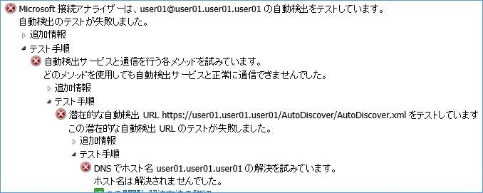

こんにちは、Exchange サポート チームの竹本です。
今回も引き続き、Autodiscover についてです。
Exchange 2007 や Exchange 2010 でも Autodiscover は非常に重要な機能でしたが、Exchange 2013 ではさらにその重要性が増しています。
Exchange 2013 環境に Outlook から接続する際、Outlook プロファイルにて表示される “サーバー” 部分には、実際に処理を行う CAS サーバー名等ではなく、ログオン対象のメールボックスのメールボックス GUID が設定されます。
例えば以下のような形ですね。

この動作変更により、メールボックス移動の際のユーザー影響などを極力減らすことができているのですが、プロファイルの作成といった観点では少し面倒です。
メールボックス毎に異なるこの GUID を、一般のユーザーが取得して手入力するのはほぼ不可能に近いため、ここで Autodiscover が機能し、この情報も含め全て自動取得、自動設定することが可能になっています。つまり、Exchange 2013 環境ではプロファイルを作成するためには Autodiscover がほぼほぼ必須、というわけです。
特に ”Exchange 2013 環境で外部から Outlook Anywhere で接続できない” という方は、是非そのクライアントから Autodiscover 接続が可能となっているかどうかについて、確認してみてください。外部クライアントでは SCP を参照できないため、Autodiscover.<smtp ドメイン> 等の形式で CAS サーバーにアクセスできる必要があります。
では Autodiscover がうまくいっているかどうかを確認するためには、どのような方法がありますでしょうか。
今回は引き続き Autodiscover のトラブルシューティングについてです。
- 基本的な確認方法について
前回はさらっと触れてしまいましたが、Autodiscover がうまくいかない場合の確認方法は、Outlook アイコンを Ctrl キーを押しながらクリックすると表示される “電子メールの自動構成のテスト” から確認することが可能です。
ユーザー名とパスワードを入れ、”AutoDiscover を使用する” のみにチェックを入れ、”テスト” ボタンをクリックします。例えばドメインに参加しておらず Autodiscover 接続の名前解決すら全くできないような場合は、以下のような画面が確認できます。

- ブラウザを使った確認方法
DNS にエントリは登録したし、本来、”https://autodiscover.<smtp ドメイン>/autodiscover/autodiscover.xml” に絶対アクセスできるはず！という方は、まずその端末上でブラウザを起動し、この URL 対してアクセスが可能か、といった点をご確認ください。問題なく Autodiscover 接続できる環境であれば、資格情報が要求された後、以下のような XML ページが表示されます。ここで “ページが表示できません” となってしまう場合は、ネットワーク的にアクセスできていない可能性が高い、という事になります。

- IE のプロキシ設定
ブラウザ経由でもアクセスができないとなると、原因は様々です。一般的には NW 的に到達できていなかったりする場合がほとんどですが、それ以外に考えられる要因としては、IE で指定されたプロキシサーバーの影響があります。
IE でプロキシの設定を入れていて、CAS サーバーや Autodiscover への接続 URL が除外設定に入っていない場合には、一度プロキシの設定を無効化するか、除外対象にこれら URL を追加することでプロキシを経由しないアクセスとさせることで現象が解消されるか、確認してみてください。
この点については、実は過去に当 Blog でも紹介させていただいておりました。
Outlook からの Web サービスへのアクセスについて
- プロファイルが作成できないので自動構成のテストすらできない
冒頭で、Exchange 2013 ではプロファイルを作成するために Autodiscover が必須、ということをご案内いたしました。
ではプロファイルを作成できない状態で Autodiscover がうまくいっているかどうかは、どうやって確認すればよいでしょうか。
ご安心ください。空の Outlook プロファイルを作って、自動構成のテストだけを実施することもできます。
例えば Outlook 2010 の場合、以下のような手順です。
— 手順ここから —
- すべてのプロファイルを削除し、Outlook を起動します。
- 任意のプロファイル名を入力し、”OK” をクリックします。
- “キャンセル” をクリックし、表示された画面 (電子メール アカウントなしでプロファイルを作成するか否か) にて “OK” をクリックします。
- スタートアップ画面が表示されますので、”次へ” をクリックします。
- “いいえ” を選択し、”次へ” をクリックします。
- “電子メールを設定しないままで続ける” にチェックを入れ、”完了” をクリックします。
— 手順ここまで —
以上で空のプロファイルが作成され Outlook が起動します。続けて Ctrl を押下しながら、タスク トレイの Outlook のアイコンをクリックし、[電子メールの自動構成のテスト] よりテストを実施します。
- ExRCA を使ったテスト
外部 (インターネット) からの Autodiscover 接続や Outlook Anywhere 接続がうまくいかない！ というときに便利なツールが、ExRCA (Remote Connectivity Analyzer) です。
これはその名の通り、リモートでの接続性を診断してくれるシミュレーション ツールのようなもので、以下の URL から誰でも簡単に、接続性の確認を行う事ができます。
https://testconnectivity.microsoft.com/
例えば Autodiscoverの接続性を確認するには、上記画面から “Outlook 自動検出” を選択します。

続けて表示される画面でメールアドレスと資格情報を入力して、”テストの実行” をクリックします。
うまくいけば “正常に完了しました” と表示され、どこかで問題が発生していれば、項目を展開していくことで、以下のようにどのテストになぜ失敗したのかを視覚的に確認することができます。

ExRCA は Autodiscover のみならず、Outlook Anywhere や ActiveSync 接続に関しても非常に有効なツールになります。
是非こちらもトラブルシューティングにお役立ていただければと思います。
Autodiscover のトラブルシューティングについては、大体こんな流れで進めることとなります。
~ 番外編 ~ Windows XP で資格情報が繰り返し要求される
そろそろサポートが終了する Windows XP ですが、実は Windows XP ならではの事象として、Exchange 2013 と接続するためのプロファイルが作成できない、といった事象が発生することがあります。
これは大きく分けて以下の 2 つの要因に該当するケースが非常に多く見られますため、改めてご紹介をさせていただきます。
・ 相互認証の問題
Windows XP および Vista RTMでは、Exchange の証明書に設定された共通名 (Common Name、CN) が、Outlook Anywhere 接続時に指定する相互認証文字列 (msstd: の後に指定するもの) と一致していない場合、資格情報の入力を繰り返し求められプロファイルが作成できなかったり、Outlook Anywhere を使用して Exchange サーバーに接続できない、といった事象が発生します。
これは Windows XP/Vista RTM の端末においては、New-ExchangeCertificate で Exchange サーバー用の証明書を作成する際に指定する SubjectName パラメータの値のみを参照し、DomainName として指定された別名を参照しない (検証しない) 動作に起因します。
そのためこのようなクライアントが存在する場合には、相互認証文字列が証明書の CN と一致するように証明書を構成する必要があります。
この点については実はこれまでも発生する事象でしたが、Exchange 2013 が Outlook Anywhere (HTTP) 接続のみ対応するようになってから、より顕著化するようになりました。
以下のように TechNet でもご案内をさせていただいておりますため、ご参照ください。
Title : サブジェクトの別名によって確立される相互認証
URL : http://technet.microsoft.com/ja-jp/library/hh849187(v=exchg.80).aspx
Title: 相互認証を確立できない
URL : http://technet.microsoft.com/ja-jp/library/dd439371(v=EXCHG.80).aspx
!注!
一度作成した証明書の CN を途中で変更することはできません。このような場合は証明書の再発行が必要となりますので、ご注意ください。
・ LM 認証レベルの問題
こちらもこれまでも発生しうるものでしたが、Windows XP 端末では認証方式として LM 認証 (NTLM 認証ではない) が使用される事があり、これがサーバー側で対応していない結果、資格情報が繰り返し要求されプロファイルが作成できない、といった事象が発生することがあります。
以下は Outlook 2003 について記載されていますが、Windows XP の場合は Outlook 2007 以降でも該当します。
Title : Outlook 2003 の RPC over HTTP 機能を利用して Exchange Server 2003 に接続するときに、Windows アカウントの資格情報の入力が求められる
URL : http://support.microsoft.com/kb/820281
そのためこのような場合は対象の端末にて、上記 KB に記載のある以下のレジストリ設定を追加後、クライアント端末を再起動いただくことで現象が回避するか、ご確認ください。
キー名 : HKEY_LOCAL_MACHINE\SYSTEM\CurrentControlSet\Control\Lsa
名前 : lmcompatibilitylevel
値 : 2 または 3
番外編を含め今回も以上となりますが、Exchange サーバーを構築、運用いただいている皆様において、少しでも参考になりましたら幸いです。
今後も当ブログおよびサポート チームをよろしくお願いいたします。